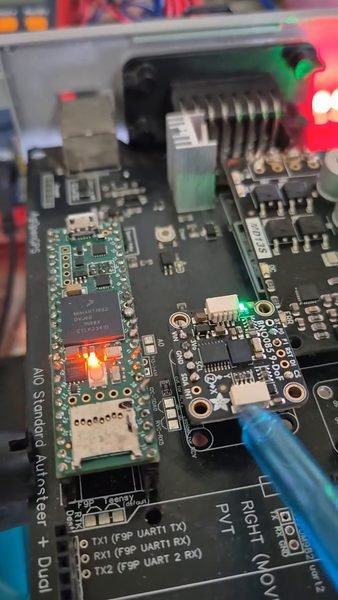
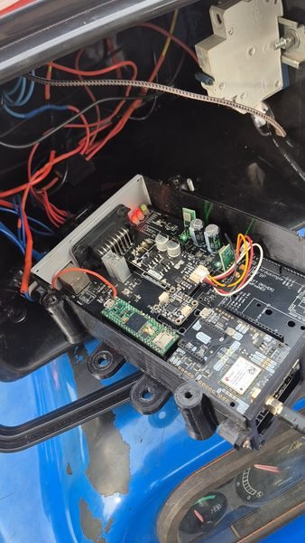
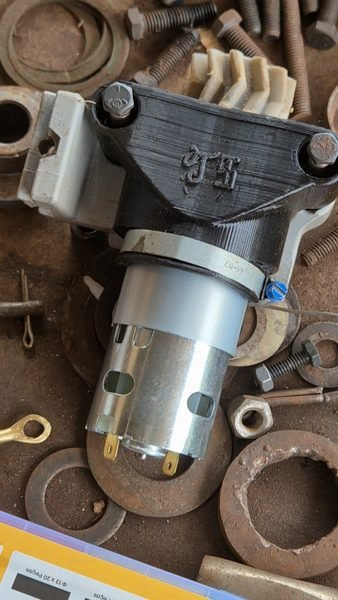
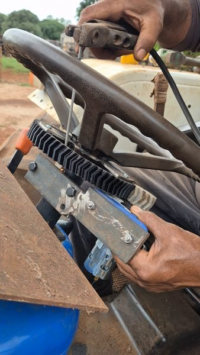
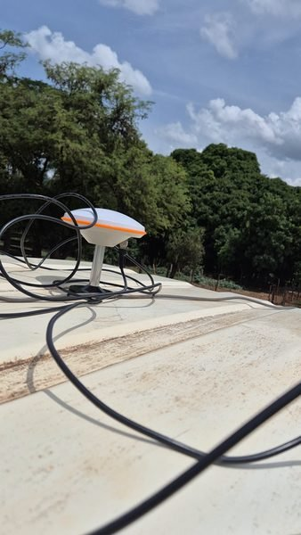
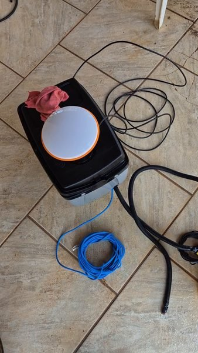
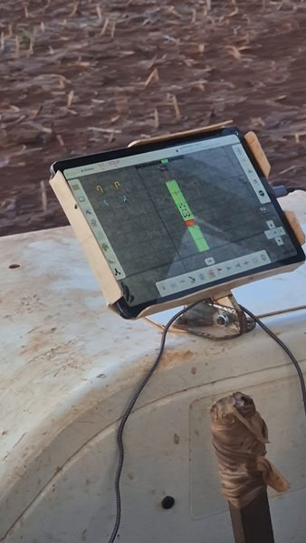
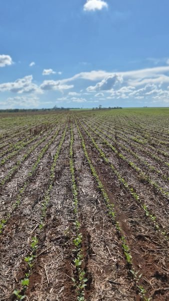

piloto automático no trator, montado por mim
produtor em Goiás · AgOpenGPS · protótipo em testeo piloto dirige e eu só supervisiono 😂 ele faz a curva na cabeceira sozinho e volta certinho no rastro. peça comprada na internet e programa gratuito
a live do fechamento do plantio tá no meu perfilcomo eu montei, o que deu errado e quanto custou de verdade, em 1 hora de conversa
4,3 cmno melhor dia, na tela, nas retas
~R$ 6.700de peça, dividindo as placas
R$ 33–50 milum kit de marca, nas lojas
como eu montei








arrasta pro lado
o primeiro desvio de poste com o piloto
plantando de noite, a linha contorna o poste sozinha
3 erros que eu vejo muita gente cometer
- Teensy sem Ethernet. custa um pouco menos e não serve
- a placa Micro no lugar da Standard sem saber. as duas funcionam, mas as peças e o GPS são diferentes
- conversor "10 A" qualquer. tem de 150 W e de 240 W com o mesmo nome, o motor pede o de 240 W
fiz essa lista com muito carinho. os links das peças são de afiliado: se vc comprar por eles, vc não paga nada a mais por isso, além de fazer uma 🐮 feliz, ajuda um pequeno produtor 🇧🇷
a precisão é a que eu medi na tela do meu trator, não é promessa para o seu